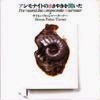

strange music page
* * * simon fisher turner
#Simon Fisher Turnerさんです、いつのまにか結構あつまってました。
はじめて聴いたのは結構昔で、高校の頃でしたね。
その頃は「なんだろ？NWかな？」みたいな印象であんまりよく覚えてませんでした。
しばらく忘れてて再会は"アンモナイトの囁きを聞いた"でした、アヤシイタイトルと安かったので中古で購入。
深くリバーブのかかったような、靄の中にいるようなアルバム、未だに大好きです。
|
- Simon Fisher Turner
- SFT
- Kendall Turner Overdrive
|
#これを買ったのは、高校生の頃。近所のCDレンタル屋の中古コーナーでバーゲンしてた時に買ったんだと思います。何故買ったかというとB.Andrews(ex.-XTC)の名前が有ったからと、なんか
HAWKWINDのSimon HouseとNik Turnerを足した名前だったからでした。(中途半端なHAWKSマニア、かつバカな高校の頃の俺)
その時は予備知識ゼロでこのCD買ってたんで何も知らなかったんですが、前衛映画のデレクジャーマンの音楽を作ったりしてる人です。独特の冷たい感触と浮遊感の音です。
- Almost Bliss
- Warm Melt
- Dark Melt
- Muzak
- Bliss
- Pop Shop (90)
- Simon Turner (tapes,loops,piano,casio,pipes,guiars,vocals)
- Barry Andrews (vocals,toast bargaining)
- Marvin Black (desk,vocals,guitar,glass,bath,recorder)
- Julie Harrington (vocals)
- Dean Speedwell (keyboards)
- David Sinclair (chapman stick)
- Tilda Swinton (vocals)
- Sasha Kamen (vocals)
- Tito (spanish guitar)
VICTOR MUSICA INDUSTRIES: VICP-88 (1990 - CREATION RECORDS)
#稲田堤ディスクユニオンの半額コーナーにて、\600でした。安いトコで好きなの見つけるとちょっと「ザマアミロ」って気分になりますね。
なんか色々なところで録音してきたテープのコラージュを元にした架空のサウンドトラック。結構イロイロな人が参加して即興で音を入れてるみたいです。
クレジットにあるB.Gilbertは元WIREの人かな？
やっぱ不思議な浮遊感はそのまま、ノイズでもないし現代音楽とも言い難いし、もちろんポップミュージックからはかけ離れてる音楽。でもキモチいいんだな、これが。(2000.6.10)
- Jazz
- Classical Piano
- Young and Beautiful
- Lower
- Cut
- BM
- Dica/Whoa
- Low
- New Song
- Drum
- Sequel
- Gong/Echo
- Last Sky
- Ski
- Strungout
- Endbang
- Simon Fisher Turner (vocals,piano,mandolin,guitars,tapes,workstation)
- Jocelyn West (vocals)
- Martyn Bates (vocals)
- Gina Birch (vocals,bass)
Questin Stevenson (poet)
- Nasia Hadin (poet)
- Segio Rvila (woodwind)
- Ruth Gottlieb (violin)
- Ann Child (viola)
- Sarah Wilson (cello)
- Kate St.John (cor anglais,tenor sax)
- Bruce Gilbert (frequency loop)
- John Byrne (harmonica)
UPLINK RECORDS: ULR-001 (1998)
#こいつも
UPLINKの通販で"BLUE"と一緒に買いました。1987の...やっぱりD.Jarmanの映画のサントラです。この頃からすでに独特の深いリバーブのかかった浮遊感のある音です。
MUTE RECORDからのリリースで、なんだかD.GalasやM.Thompsonの名前も見かけられました。(2000.7.8)
BOMBERS:
- Tonala
- Autumn Leaf
- Sketches of Luxembourg
- The Last of England
- Fina
- Persistence of Memory
- The Bridge
- Hymn for Thatcher
DIPLOMAT:
- Disco Death
- Spring Back
- Refugee Theme
- In The Free World
- Intro
- La Treizieme Revient
- EOEAOY ME
DEAD TO THE WORLD:
- The Day After Tomorrow
- Imprisoned Memories
- The Dead Sea
- Broadway Boy
- The National Grid
- Simon Fisher Turner
- Diamanda Galas (on 14.15.)
- Mayo Thompson (on 9.19.)
MUTE RECORDS/UPLINK: UPLINK-CD-01 (1987)
#Derek Jarman(イギリスの前衛映画の人、94年にエイズで死んだ)の遺作"BLUE"のサントラです。"BLUE"って映画は(見た事ないけど)映像ナシで、ただただブルーのスクリーンにこのサントラの音が流れ続けるだけのモノらしいです。
語りと音の断片を繋ぎ合わせたような音、パソコンの画面を真っ青にしてこのCD(74分、映画と一緒)を一通り聴けばこの映画を見た事になれるのかな？それはともかくとして、通常のサントラとは比較にならない程の情報量です。"BLUE"っていう映画を成立させている50%以上がこの音ですから、当然といえば当然なんですけど。
静かですけど、存在感のある音。フツーの人に薦めるのはちょっと躊躇われるけど。目を閉じて聴くとアタマの裏辺りに何かがスーって広がっていく感じがします。
MomusやB.EnoやKate St.Johnなんて名前も見られます、トラック7曲ですけどクレジットは無しです。
ちなみに購入は
UPLINKのインターネット通販にて。便利ですねぇ、銀行に振り込みにいくのめんどかったけどさ。(2000.7.8)
- Simon Fisher Turner
- John Balance
- Gini Ball
- Marvin Black
- Peter Christopherson
- Markus Dravius
- Brian Eno
- Tony Hinnigan
- Danny Hyde
- Jan Latham Koenig
- Mardel Hill
- Miranda Sex Garden
- Momus
- Vini Reilly
- Kate St.John
- Richard Watson
- High Webb
MUTE REOCORDS/UPLINK: ULC-003 (1994)
#えーとNADJAという映画のサントラ、映画に関してはまったく知らないんですけど、D.リンチの映画みたいですね。
渋谷ディスクユニオンにて\880でした、ストリングスとピアノ/残響音とノイズ。やっぱしとても浮遊感の有る、遠くから聞えてくるような音です。
- The Dead Travel Fast
- Allergy To Sunlight
- No Comfort In The Bloody Shadows
- Isle Of Spices
- Pixmiles
- Stake In The Heart
- Lunch At Great Ressington
- Love, Death, Avoid It
- Orchestrated Gravel
GYROSCOPE: GYR-6617-2 (1995)
#吉祥寺ディスクユニオンにて、\900。今現在すっげーお気に入りです。
同名の映画のサントラですが、映像をみた事なくってもスバラシイです、白昼夢みたいな醒めてるのか眠ってるのかわからないような、綺麗で不思議な浮遊感のある音。(2000.2.)

- The first dream
- magic light box
- sister sister
- see-saw
- The second dream
- yellow music
- boy shell
- forest film
- curtains
- sleeping rocks
- blindfold
- The last dream
- don't be sad
- burning lives
- most beautiful sea and wind
- I'm afraind to go to sleep
music by Simon Fisher Turner
UPLINK: UCL-002 (1992)
#タワレコで\500でした。"SFT/TRAVELCARD"としか書かれてなかったのでSimon F.Turnerのモノかしばらく迷ったんですけど。
今のところ持ってるSimon F.TurnerのCDの中では最新です。音の感触は以前のアルバムとそんなに変わらないのですが、ビートの有る曲はそれが強調されて抽象的な曲は更に抽象的になっているような....
なんだか80年代ノイズの90年代入ってからの音に似た感じもちょっとしました、リズムの有る曲は輪郭がはっきり見えてきちゃうので、いけてないテクノみたいでちょっとかっこ悪いです。(2001.2.12)
- HOLE ENTRY
- PHOTE
- SLOPE
- TWICE TWO
- GUITAR PULE
- FILTER
- SLEEPER DROUGHT
- CLOSE
written,recorded,produced by Simon Fisher Turner & Robin Rimbaud
sulphur records: SULCD-005 (2000)
#"SHWARMA"の音を使ってP.Kendallって人が再構築したアルバム....同じ材料を使ってはいますけど、受ける印象は結構違います、こっちのCDの方がちょっと濃縮された感じですかね。個人的には"SHWARMA"の方が好きですけど。
渋谷のバナナレコードで\1200でした。(2000.7.8)
- Turbin
- Mechanism
- Pedal Stop
- Sump
- Cylinder
- Shift
- Berched Driver
- Low
- New Song
- Dismantle
- Simon Fisher Turner
- Paul Kendall
UPLINK RECORDS: ULR-002 (1998)